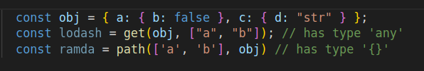
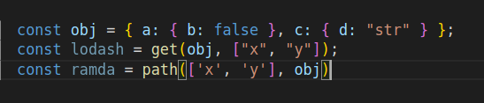
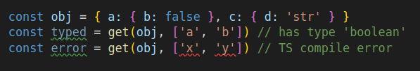
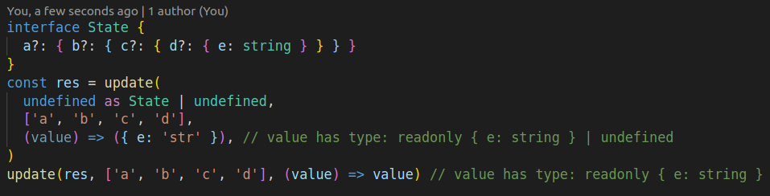

tsfunct 
Tsfunct is a T**ypeScript **functional library made directly for TS with its static typesystem in mind.
Installation
To install this package run either:
yarn add @siegrift/tsfunct
or if you use npm
npm i @siegrift/tsfunct --save
Motivation
There are two big libraries which provide helper functions for JS/TS. These are lodash and ramda. Both of these libraries are made for JS and the TS typings have been added only afterwards. Also, these libraries aim to be as general as possible, which makes it harder to type properly.
Most of the times, the typings for these helper functions is pretty decent. However, not always... There are certain helpers (mainly for immutable object manipulation) which can be typed better.
Let's take a look at get(obj, path) helper in both lodash and ramda, when using it on a
strongly typed TS object.
 (Lodash gets it at least correct, but cannot determine the result type. Ramda allows you to pass a type that is being returned, but you can omit it and produce incorrect result type)
 (There are no TS warnings about accessing value on nonexistent path)
Lets look what you can get by using get(obj, path) from this library.
 There are many advantages of this helper:
- The result has correct type
- The path can be autocompleted and must be able to exist in the object
- Handles arrays, optional and nullable values (even in intermediate objects)

When you call update for the first time, value in update function can be undefined (if any
intermediate value doesn't exist). However, when calling it for a second time, it is guaranteed that
the values on the path exist.
Refer to documentation, source code and tests for more examples.
Chaining
Original idea was to support chaining same way as lodash _.chain works, however after reading
this article
describing the disadvantages of using this function, I decided to drop this idea.
Functional programming style
All of the functions in this library are written imperatively (e.g. get(object, path) compared
to traditional functional get(path, object)). I encourage you to use FP style, and you can easily
create small wrappers, which will curry, and
rearrange the arguments (however, your helper will need
fixed number arguments).
Immutability
All functions in this library are effectively immutable. That means that if you use the helpers
according to their idiomatic usage, library is immutable. However, you are able to modify the
original entity, for example, by using map helper this way:
const original = [{ a: 0 }, { a: 1 }, { a: 2 }];
const mapped = map(original, (val: any) => (val.a = 3));
// 'mapped' will equal to [3, 3, 3]
// 'original' will equal to [{ a: 3 }, { a: 3 }, { a: 3 }]API and documentation
Documentation is automatically generated from source code and can be found at github pages here.
You can read the list and sources of all helpers in the src/lib folder here.
Limitations
Most of the helpers are typed manually and have some restrictions on its arguments. For example, path array can be up to 5 elements only...
Other limitation is typescript path autocompletion, which I reported and will be fixed in the future.